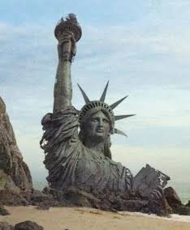
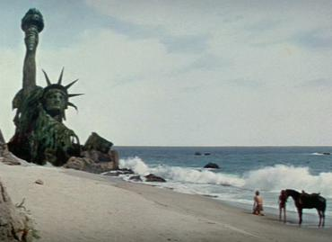

The 1968 movie Planet of the Apes is a story about astronauts. Astronauts Taylor, Landon, Dodge, and Stewart
are astronauts that crashed into a foreign planet following a near light speed journey. They all awaken, except for Stewart who is found as a wrinkled old corpse,
after her hibernation pod broke. They realize after looking at a chronometer, a very precise kind of clock, and the current date is November 25, 3978, approximately
two millenia into the future, but they have ages less than a year.
After traveling for days, they stumble upon primative humans, who are raiding a corn field.
Soon after, armed gorillas attack the group, killing Dodge, captured Landon, and shot Taylor in the throat, leaving him temporarily mute. He is taken to Ape City,
where he is saved by two doctors, Zira and Galen. After days of being in captivity, Taylor pieces together the landscape of this grid. The world is dominated
by intelligent primates, primarily chimpanzees and orangutans, but including other apes. After the leaders of Ape City learn about the existence of an intelligent
non-simian, they convene a council to decide what to do with Taylor. In this council Taylor learns about the fate of Landon, who was lobotomized and rendered
catatonic. The leader of the council, Zaius, threatens Taylor with lobotomization and castration if he does not reveal his origins, not believing his story of
being from "America". After they make a daring escape, Taylor, Zira, and her husband, Cornelius, make their way to the Forbidden Zone, in an attempt to clear the
couples previous heresy charges, and to prove that Taylor is not from this planet.
When they arrive at the cave, they are intercepted by Zaius and his soldiers,
but Taylor holds them off by threatening to shoot Zaius. Zaius agrees to enter the cave to disprove their theories. Inside the cave, Cornelius presents theories of
a now-extinct human society that predate intelligent simian history, including a talking human doll. Zaius reveals that he has known about a prior human civilization,
but warns Taylor to not search for answers, believing he will not like what he sees. Taylor and Nova leave on horseback, Zaius destroys the cave entrance to hide the evidence,
and Zira and Cornelius are charged with heresy.
Taylor and Nova follow the shoreline on borrowed horses, and together they discover the remnants of the Statue Of Liberty,
reavealing that they have been on earth all along, and that humans have been destroyed by nuclear war.
